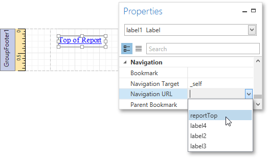

Add a Cross-Reference
This tutorial demonstrates how to add a cross-reference to your report. A cross-reference is a link whose target is located within the current document and which allows you to establish easy navigation through a report. In this example, a link is placed at the bottom of each group, leading to the beginning of the report.
To demonstrate this feature, use a report with grouping similar to the one created in the following tutorial: Grouping Data.
To create a report with cross-references, do the following.
Drop a label onto the created Report Header band, which will serve as the report's headline. Click the label to type the desired contents into it. Then, in the Properties Panel, set its Name property to reportTop.

To accompany the existing Group Header with the corresponding Footer, in the Group and Sort Panel, enable the Show Footer option.

Then, drop a label onto the Group Footer band. Change the label's Text to Top of Report and apply the desired formatting to it (e.g., the blue color and underlined text).
Set its Navigation Target property to _self. Then, if you click the drop-down list of the Navigation URL property, you can see the controls available in your report. Choose the one named reportTop.

The report with cross-references is now ready. Switch to the Print Preview tab and view the result.